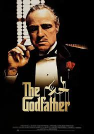

COMO CABRAS
Calificación: 8.0 / 10
COMO CABRAS
Calificación: 8.0 / 10
 EXIT PROTOCOLCalificación: 8.0 / 10
EXIT PROTOCOLCalificación: 8.0 / 10
 LONDON CALLING
Calificación: 8.0 / 10
LONDON CALLING
Calificación: 8.0 / 10
 SUPER MARIO GALAXY
Calificación: 8.0 / 10
SUPER MARIO GALAXY
Calificación: 8.0 / 10
 NO QUEDAN JUNGLAS
Calificación: 8.0 / 10
NO QUEDAN JUNGLAS
Calificación: 8.0 / 10
 EL GUARDIAN
EL GUARDIAN


GLADIADOR
Calificación: 7.3 / 10
“Épica en todo sentido. Russell Crowe en su mejor momento, impresionante de principio a…”
Reseñado 13/01/2025

BLADE RUNNER
Calificación: 7.1 / 10
“Visualmente impresionante. Ritmo lento pero cada frame vale la pena verlo con atención.”
Reseñado 13/01/2025

BATMAN
Calificación: 8.0 / 10
“Oscura y visceral. Pattinson sorprendió. La mejor versión del personaje en muchos años.”
Reseñado 13/01/2025

PAST LIVE
Calificación: 8.0 / 10
“Una historia de amor silenciosa y devastadora. Te quedás pensando días después de…”
Reseñado 13/01/2025

OPPENHEIMER
Calificación: 8.0 / 10
“Nolan en su máximo esplendor. Actuaciones impecables y una narrativa que te deja sin…
Reseñado 13/01/2025
BLADE RUNNER
Calificación: 8.7 / 10
"La lluvia, las luces de neón, la melancolía. Un mundo que te atrapa y no te suelta jamás. La historia sigue a Rick Deckard, un blade runner encargado de retirar replicantes: androides casi indistinguibles de los humanos, creados para trabajos peligrosos fuera de la Tierra. Cuando un grupo de replicantes rebeldes regresa ilegalmente, Deckard es obligado a volver al servicio para cazarlos. A medida que avanza su misión, la línea entre lo humano y lo artificial comienza a desdibujarse. Especialmente cuando conoce a Rachael, una replicante que no sabe que lo es, lo que lo enfrenta a preguntas profundas sobre la memoria, la identidad y la empatía. La película no se apoya solo en su trama, sino en su atmósfera: una ciudad futurista decadente, oscura y sobrecargada, donde cada rincón transmite soledad y desgaste. La música y la estética trabajan juntas para crear una sensación constante de nostalgia por algo que quizás nunca existió. Más que una historia de ciencia ficción, es una reflexión filosófica sobre qué significa ser humano, cuánto valen nuestros recuerdos y si la vida, sin importar su origen, merece ser vivida. Una obra que crece con el tiempo y deja pensando mucho después de terminar.
Reseñado por: ScifiLover - 06/2023

EL PADRINO
Calificación: 9.5 / 10
"La película más importante de la historia del cine. Coppola creó algo que nunca va a poder... replicarse, una obra que redefine el género y establece un estándar casi imposible de igualar. La historia sigue a la familia Corleone, una de las más poderosas organizaciones mafiosas de Nueva York, liderada por Don Vito Corleone, un hombre tan respetado como temido. A través de intrigas, traiciones y alianzas, la película explora el funcionamiento interno de este mundo criminal, donde los negocios y la familia se entrelazan constantemente. Sin embargo, el verdadero eje de la historia es la transformación de Michael Corleone, el hijo menor, quien en un principio busca mantenerse alejado de los asuntos familiares, pero termina siendo absorbido por ese mismo destino. Con actuaciones memorables, diálogos icónicos y una dirección impecable, cada escena está cargada de tensión y significado. La narrativa avanza con una precisión casi quirúrgica, mostrando cómo el poder se construye, se mantiene y también corrompe. Más que una historia de mafia, es un retrato profundo sobre la familia, el honor, la lealtad y el precio del poder. Una película que no solo marcó una época, sino que sigue siendo una referencia obligatoria para entender el cine en su máxima expresión.
Reseñado por: CineClasico - 03/2023
THE BATMAN
Calificación: 8.7 / 10
"Finalmente una película de Batman que entiende que el personaje es un detective ant... es que un simple héroe de acción. La historia sigue a Bruce Wayne en sus primeros años como Batman, todavía inexperto y marcado por una profunda obsesión con la justicia, mientras patrulla una Gotham oscura, corrupta y al borde del colapso. Cuando un asesino en serie conocido como el Acertijo comienza a eliminar figuras importantes de la ciudad, dejando pistas enigmáticas en cada crimen, Batman se ve obligado a enfrentarse a un caso que pone a prueba tanto su inteligencia como su estabilidad emocional. A lo largo de la investigación, se cruza con personajes clave como Selina Kyle y el Pingüino, mientras descubre secretos ocultos que conectan directamente con su propia familia. La película apuesta por un tono mucho más sombrío y realista, con una estética noir muy marcada, donde la lluvia constante, la oscuridad y la música crean una atmósfera pesada y envolvente. Más que centrarse en la acción, el enfoque está en la investigación, el desarrollo psicológico del personaje y el impacto de sus decisiones. Es una reinterpretación más humana y vulnerable del héroe, mostrando no solo su lucha contra el crimen, sino también contra sí mismo. Una versión que se siente fresca, intensa y profundamente inmersiva.
Reseñado por: DarkNight88 - 03/2023

INCEPTION
Calificación: 9.0 / 10
"Cada capa del sueño es más brillante que la anterior. La escena del hotel desafía la física de una forma tan creativa como impactante, mostrando el nivel de detalle y precisión con el que está construida la película. La historia sigue a Dom Cobb, un experto en infiltrarse en los sueños de las personas para robar secretos del subconsciente, una habilidad que lo ha convertido en un fugitivo y lo ha alejado de todo lo que ama. Su oportunidad de redención llega con una tarea aparentemente imposible: no robar una idea, sino implantarla en la mente de alguien, proceso conocido como “inception”. Para lograrlo, deberá reunir un equipo especializado y adentrarse en múltiples niveles de sueño, donde el tiempo, el espacio y las reglas de la realidad comienzan a distorsionarse. A medida que las capas del sueño se vuelven más profundas, también lo hacen los conflictos internos de Cobb, especialmente el recuerdo de su esposa, que amenaza con sabotear la misión. La película equilibra acción, ciencia ficción y drama emocional, manteniendo una tensión constante que no da respiro. Más allá de su compleja estructura narrativa, es una reflexión sobre la mente, la culpa y la percepción de la realidad. El final abierto deja una pregunta que sigue generando debate: ¿qué es real y qué no?
Reseñado por: NostalgicEditor - 01/2023
PAST LIVES
Calificación: 8.0 / 10
"No pasa nada y pasan todas las cosas al mismo tiempo. La definición es de cine tranquilo y... profundamente emocional, donde los silencios dicen más que los diálogos y las miradas cargan con años de historia. La película sigue a Nora y Hae Sung, dos amigos de la infancia en Corea del Sur que se separan cuando ella emigra con su familia a otro país. A lo largo de los años, sus vidas toman caminos distintos, pero el recuerdo del otro nunca desaparece del todo. A través de encuentros virtuales y, finalmente, un reencuentro en la adultez, la historia explora qué significa el destino, las decisiones que tomamos y las vidas que dejamos atrás. La película plantea una pregunta constante: ¿qué habría pasado si...? Con un ritmo pausado y contemplativo, la narrativa se apoya en momentos cotidianos que construyen una tensión emocional muy real, mostrando cómo el amor puede existir incluso cuando no se concreta. No se trata de un romance convencional, sino de una reflexión sobre el paso del tiempo, la identidad y las conexiones humanas que trascienden la distancia y los años. Es una historia íntima, melancólica y honesta, que deja una sensación duradera mucho después de que termina, invitando a pensar en nuestras propias “vidas pasadas” y en las decisiones que nos trajeron hasta donde estamos hoy. "No pasa nada y pasan todas las cosas al mismo tiempo. La definición es de cine tranquilo y..."
Reseñado por: CineSutil - 11/2023